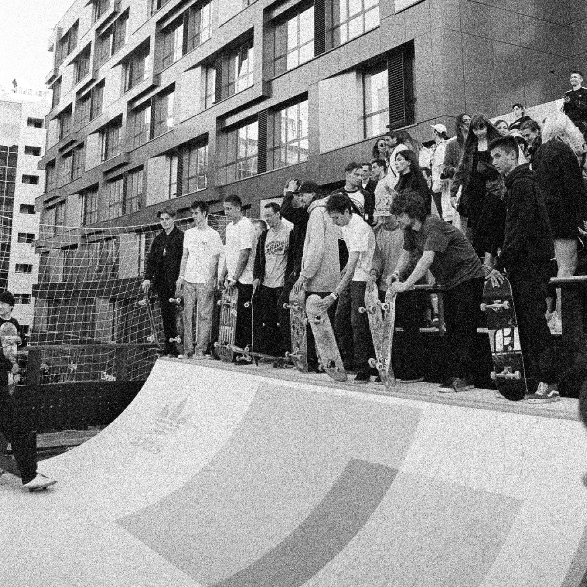
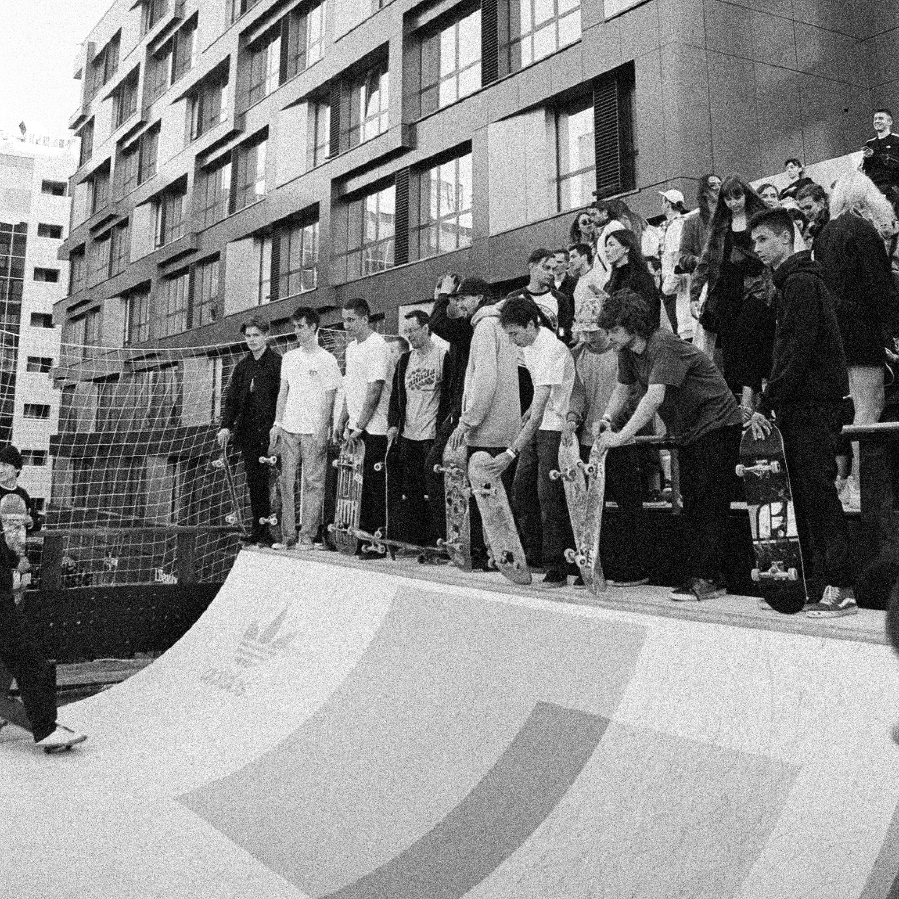

Street Jam Festival
Le 15 octobre 2023, Vevey célèbre les tendances actuelles en matière
d'art urbain et de musique, et rassemble une communauté de personnes
partageant les mêmes intérêts.
Notre événement offre une variété d'activités pour les visiteurs,
notamment des démonstrations de skate réalisées par des professionnels,
des ateliers de graffiti interactifs, des expositions d'œuvres d'art
urbain innovantes et des performances musicales d'artistes locaux et
internationaux.
Notre objectif est de créer un espace pour que les artistes de rue et
les amateurs de culture urbaine puissent se rencontrer, partager leur
savoir-faire et leur passion pour l'art urbain et s'immerger dans
une ambiance urbaine unique.
Notre festival propose également une sélection de stands de restauration
proposant une cuisine de rue authentique pour ravir les papilles des
visiteurs.
 

Skate
09h00-10h00:
Inscriptions et accueil des participants10h00-10h30:
Démo de skateboard par des professionnels10h30-11h30:
Atelier d'initiation au skateboard pour les débutants11h30-12h30:
Session de skateboard libre pour les participants12h30-13h30:
Pause13h30-14h00:
Concours de skateboard "Meilleure figure" pour les participants14h00-15h00:
Session de skateboard libre pour les participants15h00-15h30:
Démo de skateboard par des professionnels15h30-16h30:
Atelier de skateboard "Street Style" pour les skateurs expérimentés16h30-17h00:
Remise des prix pour le concours "Meilleure figure"17h00:
Fin de la journéeVeuillez noter que les horaires sont donnés à titre indicatif et peuvent être sujets à des changements. Les participants seront informés des horaires définitifs lors de leur inscription à l'événement.
Musique
15h00-17h00:
Atelier de musique urbaine pour les amateurs de beatmaking et de rap17h00-23h00:
Concert de hip-hop avec des artistes locaux et nationaux24h00:
Fin de la journéeStreet food
Notre festival vous propose une variété de stands de restauration sur place tout au long de la journée. Vous pourrez notamment découvrir: